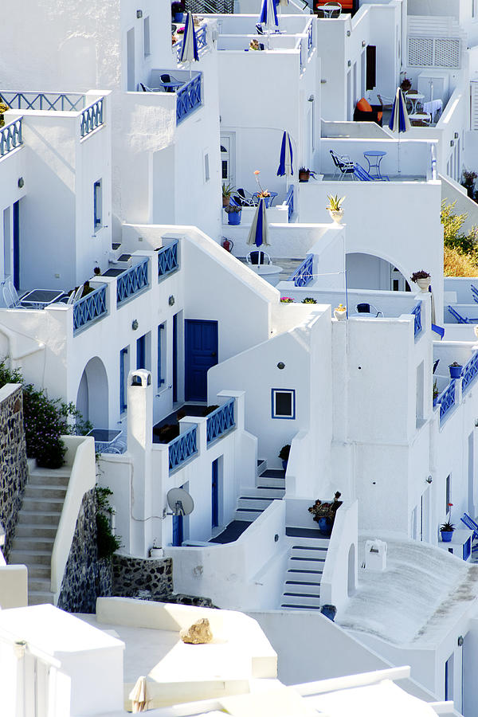
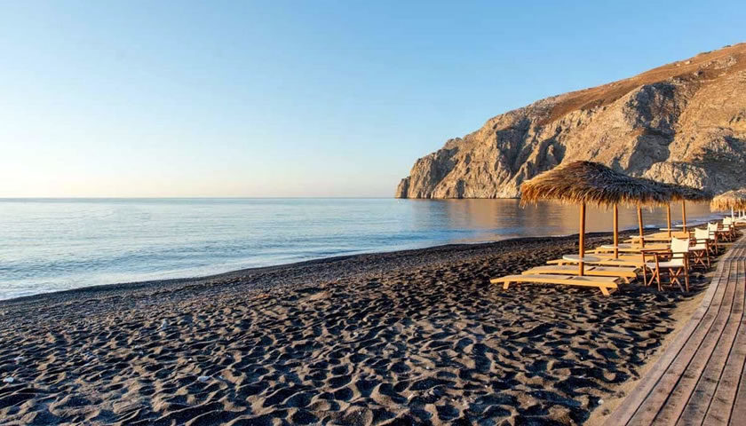
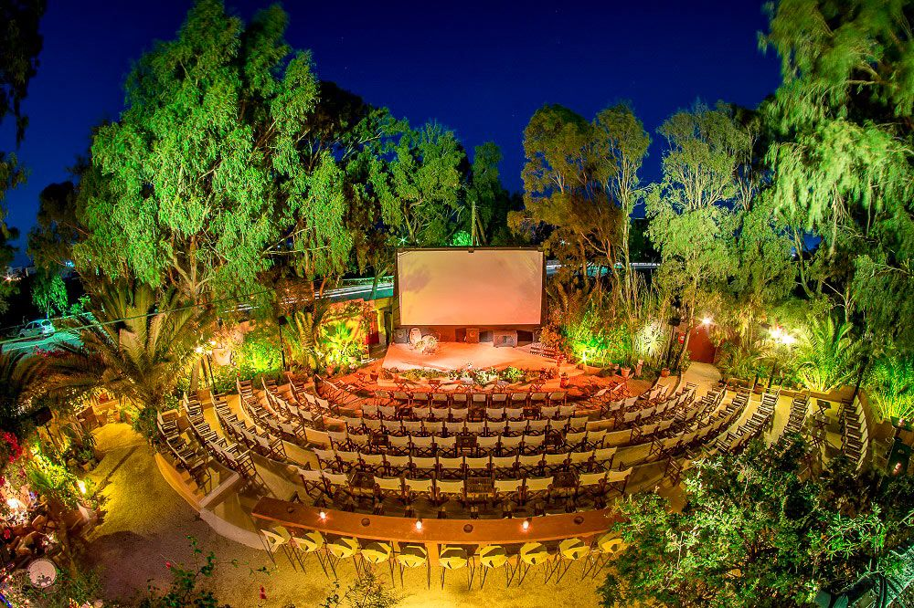
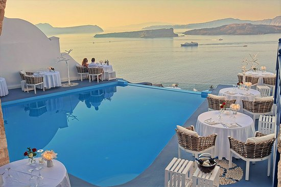
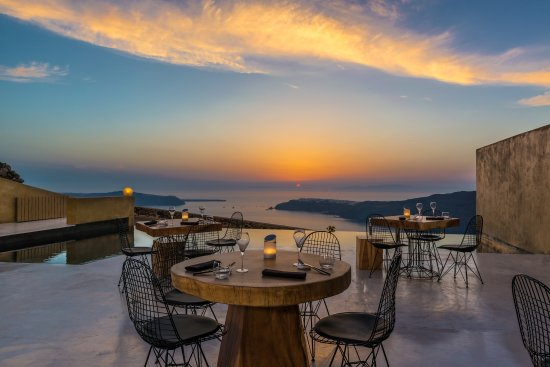
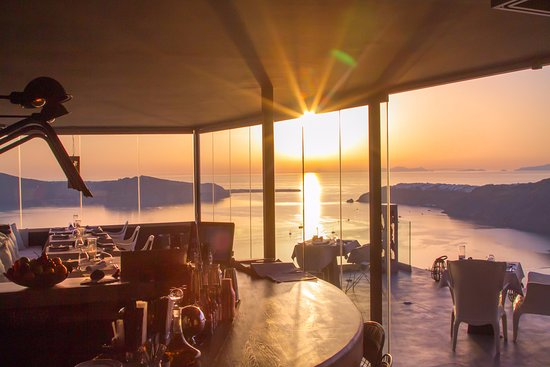

Santorini, es la joya de las Cycladas. Es absolutamente diferente a todas las islas Cycladas o a cualquier isla del Egeo. Su configuración geológica le da esa belleza salvaje y única. La isla toma su forma actual tras hundirse la caldera del enorme volcán. Su capital es el pueblo de Thira y su principal puerto el de Acinios. Su suelo principalmente es volcánico. Habitada, al menos desde el 3000 a. de C. por los fenicios, tiene su apogeo del 2000 al 1600 a. de C., año que interrumpió su desarrollo debido a la tremenda y apocalíptica explosión del volcán. Existe una teoría, según la cual, en Santorini pudo encontrarse la perdida Atlántida. Existen algunos que así lo afirman. A los griegos, al menos, así les gusta creerlo. Santorini es un pueblo mediteráneo colgado sobre el acantilado con vistas a la Caldera y al mar Egeo.
En Santorini, cada detalle es belleza. Tiene forma de media luna y en su parte interior, donde antiguamente estaba el gran volcán, existen otra serie de islas más pequeñas pero muy bellas. Al oeste es escarpada y rocosa, destacando su gran precipicio sobre el mar, mientras que al sur va descendiendo lentamente hasta el mar, donde se encuentran las playas de arena oscura.
Lugares y Restaurantes
Casas blancas y azúles
Playa Kamari
Cine al aire libre



Alali Restaurant
Throubi Restaurant
Fly Away Creative Bar & Restaurant



Itinerario de viaje
Día 1:
Descubrir las famosas casas blancas y azules.
Pasear por los pintorescos callejones estrechos.
Disfrutar de boutiques elegantes y hoteles de lujo con piscinas infinitas.
Admirar las magníficas vistas de la caldera.
Día 2:
Visitar el puerto de Fira Skala.
Visitar El Museo de la Tera Prehistórica, que expone vestigios descubiertos en Akrotiri y otras excavaciones arqueológicas en Santorini.
Visitar El museo arqueológico y su colección de restos de todo Santorini, incluyendo jarrones de Akrotiri.